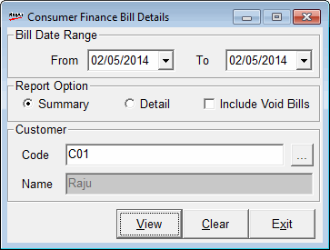

The Consumer Finance Scheme report provides information on applied schemes, bill details, customer information, etc. for the selected period.
How to reach: Reports > MIS > Consumer Finance Scheme
The Consumer Finance Bill Details window is displayed.

Date Range: Enter/Select the opening and closing dates for which the report is to be generated. By default, the From and To are the current Shoper date. You can enter any date range but the To date cannot be greater than the Shoper date.
Report Option: Select the required option, Summary or Detail , Include Void Bills for generating the report.
Summary: Select to generate a short/brief details of the report.
Detail: Select to generate a full detail of the report.
Include Void Bills: Select to generate the report including cancelled bills.
Customer: Select to view report for a particular customer.
Code: Enter or click F2 to select the customer
Name: The name of the customer is displayed after the entry or selection of the customer code.